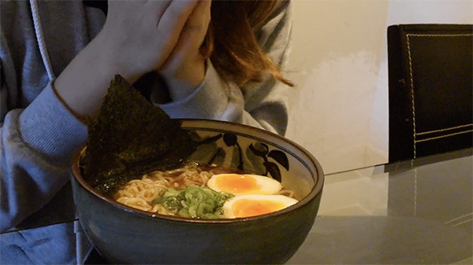
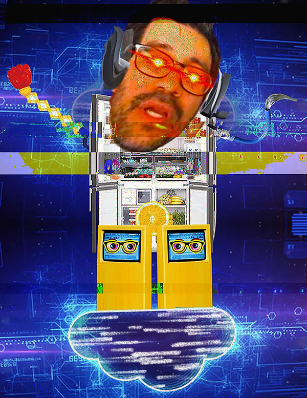
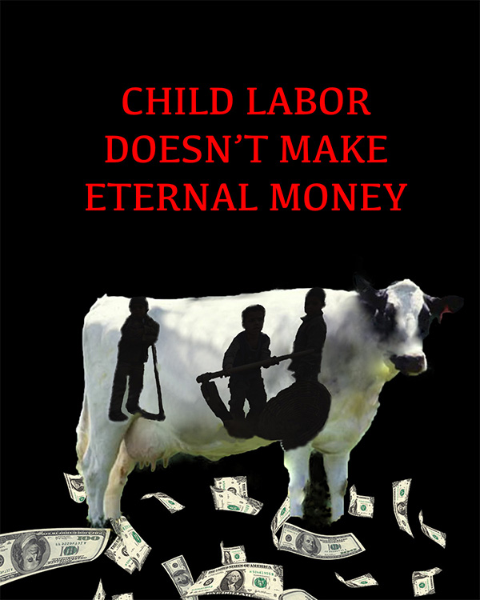
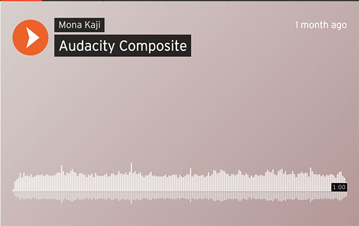
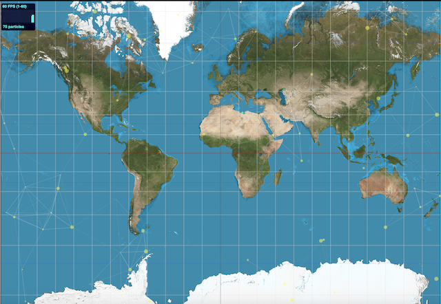
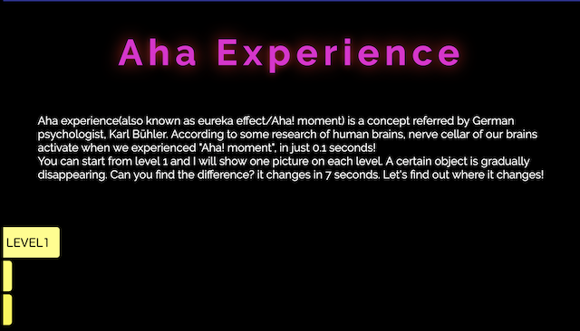
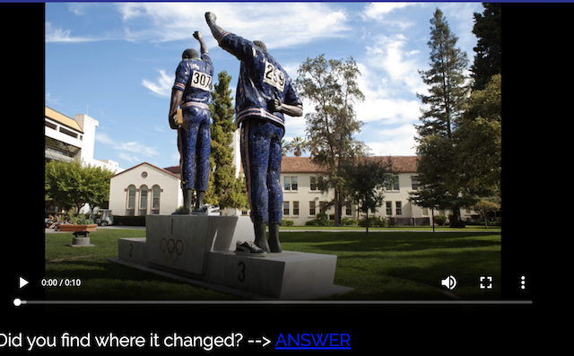

"Netart Project", Website, 2019
I and my classmates made our self portrait as data.
"Audio/Video Art Project", Video, 2019
I create a video collecting the sound of food/drink. I made this because not only I just like the sound, but also the sound is important when making people hungry and be curious.
"Glitch Art Project", Digital Image, 2019
I used Audacity and added effects which is distortion to the 3 places. Also I added the echo effect in the middle and bottom.
"Composite Art Project", Digital Image, 2019
Based on the word "cow cash" I came up with this idea. I regarded the pattern of the cow as a child working in child labor and collaged the money that will fall forever from it. I think that people who think child labor is surely good think children are only as eternal tools and can be used as "material" which will generate money. And the second one represented people who are pleased without knowing the source of the money.
"Audacity Composite", sound, 2019
I and my classmates recorded some sounds from elevator. It is the sound of closing the door, ringing the bell, and scratching the wall. etc.
"Code as Art Project", website, 2019
This page shoes how information spread online nowadays. If I click anywhere on the page, the circle increases. It means how the information spreads to a wide range and every person have choice to spread information.
 "Aha Experience!", website, 2019
"Aha Experience!" I wanted to make a little game for final project. I thought making this game is gonna be a good review for using a technique I learned of photoshop, editing video, and also html/css. This game was popular in my country Japan almost 10 years ago and I don't know if it's really helping nerves of our brains activate, but I think it's fun anyway to find the difference.